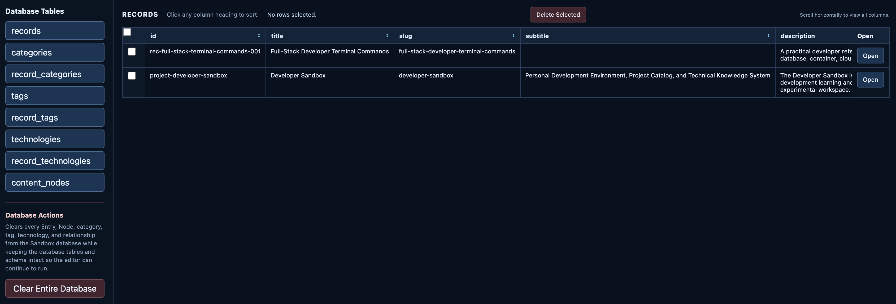
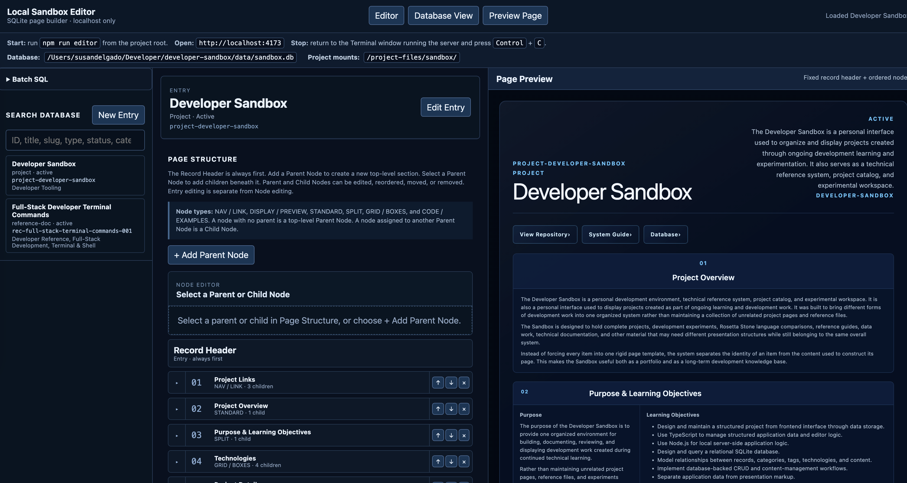

What It Does
The Sandbox database stores the structured information used by projects, reference guides, experiments, Rosetta Stones, and other content in the Developer Sandbox.
Instead of placing all project information directly inside individual HTML pages, common data can be stored in one relational system and managed through the local editing tools.

Technologies Used
The datastore uses SQLite and SQL for relational data storage. TypeScript is used for the application logic that works with the stored data, while Node.js provides the local connection between the browser-based editing interface and SQLite.
How It Is Structured
Records are the main entries in the Sandbox. Each record can be connected to categories, tags, technologies, and Content Nodes. Content Nodes contain the structured sections used to build the detailed content for an entry.
Relationship tables allow multiple records to share categories, tags, and technologies without storing the same information repeatedly.

records
│
├── categories
├── tags
├── technologies
│
└── content_nodes
│
└── parent / child page contentWhy It Is Used on This Website
The Developer Sandbox contains different kinds of technical content, but much of that content shares the same basic information. The database provides one consistent place to store and organize that information instead of maintaining every project, guide, and experiment separately.
SQLite keeps the system lightweight because the database can live directly inside the project without requiring a separate database service. The database supports the content-management side of the Sandbox while the public website remains focused on displaying the finished work.